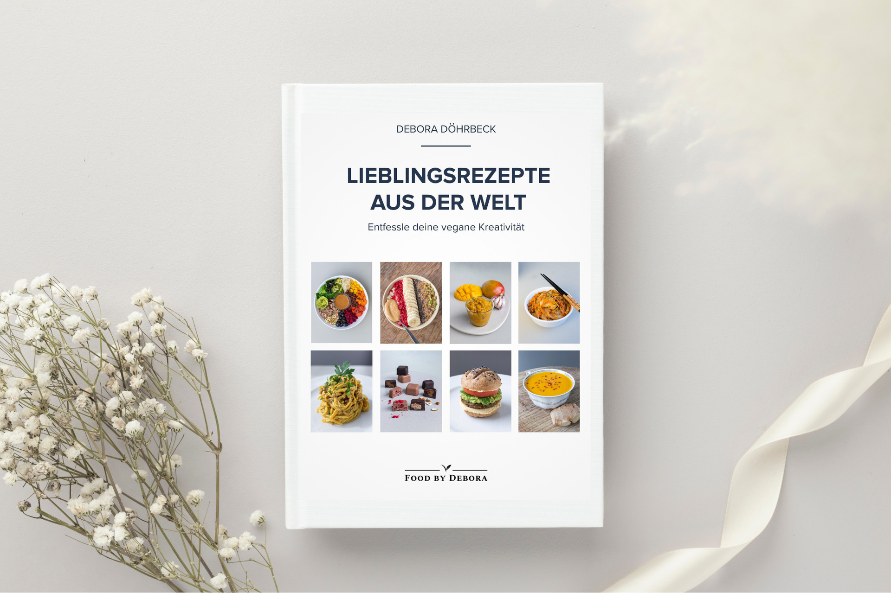
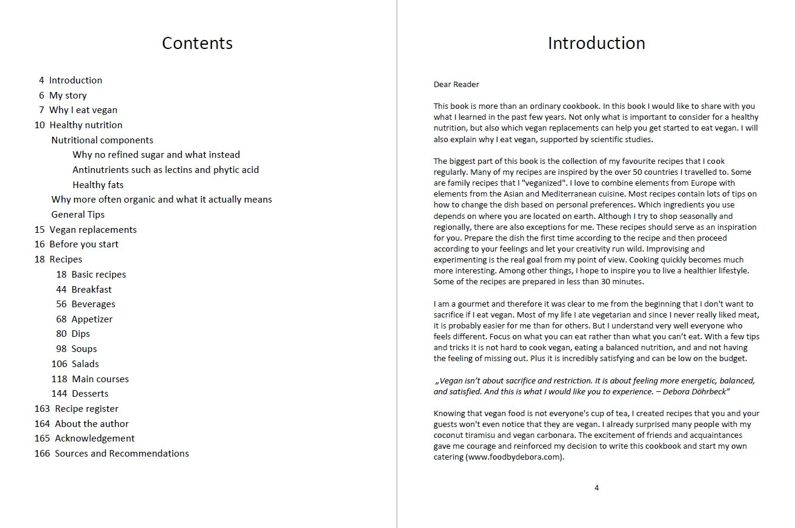
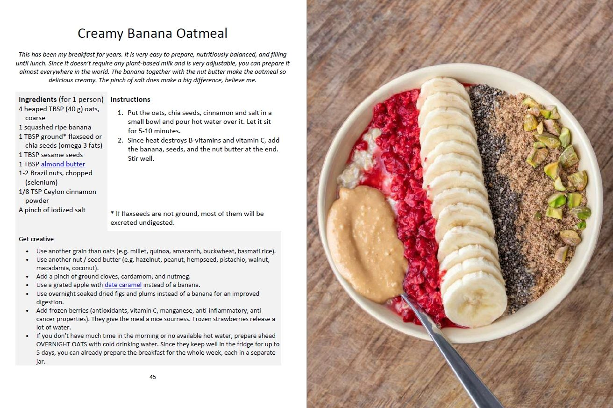

Wenn du in der Schweiz lebst, kannst du die gedruckte Version meines Kochbuchs direkt bei mir bestellen.
Falls du dir das E-Book nicht leisten kannst, schreibe mir gerne eine E-Mail (foodbydebora@gmail.com), und ich sende dir ein kostenloses Exemplar. Wohlstand ist nicht gerecht verteilt, und ich möchte, dass alle die Möglichkeit haben, gesunde und köstliche Mahlzeiten zu geniessen. Erzähl mir deine Geschichte – ich freue mich, von dir zu hören.
ZUFRIEDENE KUNDEN
Loved all the vegan dishes from Debora, they are so amazingly tasty and made with lots of love, I am gonna keep her cookbook definitely handy in the kitchen!
- Gisela
Debora was a major influence on my choice of embracing veggie and vegan food. She showed me that it can be tasty, rich in nutrients, creative, accessible to everyone and support my body in functioning well and maintaining high energy levels.
- Sânzio
Debora makes the most delicious vegan food, with passion and creativity! What I love most is her refreshing ability to combine styles from different parts of the world. With her attentive and kind personality she made me want to explore more, so I purchased her cookbook :)
- Lea
Debora opened the doors to the world of amazing vegan food for me. Even though I’m non-vegan and pretty picky with my dishes, she managed to surprise me with the taste and quality of her meal. . I’m still dreaming about cinnamon ice cream… Can’t believe it’s vegan and soo delicious.
- Polina
Egal, ob du dich vegan ernährst oder einfach neue, kreative Alternativen suchst – dieses Buch lädt dich ein, abwechslungsreiche Gerichte voller Genuss zu entdecken. Ich teile meine liebsten Rezepte, darunter Tiramisu, Tom Yum, erfrischende und sättigende Salate, unzählige aromatische Saucen wie Muhammara und Ajvar, köstliche Getränke wie Lassi und zahlreiche Grundrezepte für Brot, Joghurt und Kimchi.
Die meisten Gerichte sind in weniger als 30 Minuten zubereitet und lassen sich flexibel an deine Vorlieben anpassen. Der Fokus liegt auf vollwertiger, ausgewogener Ernährung – ohne raffinierten Zucker. Viele Rezepte sind von Natur aus glutenfrei oder lassen sich glutenfrei zubereiten, ebenso wie sojafreie und nussfreie Alternativen.
BESCHREIBUNG

